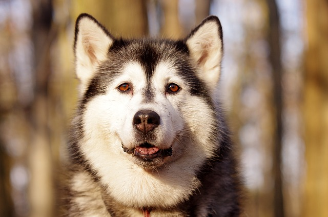
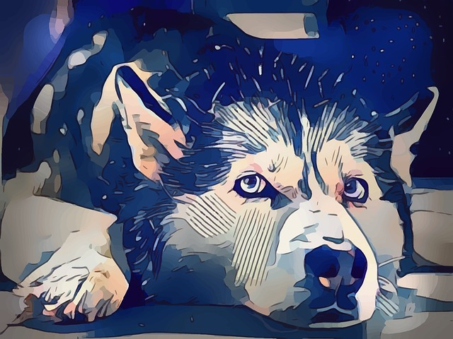
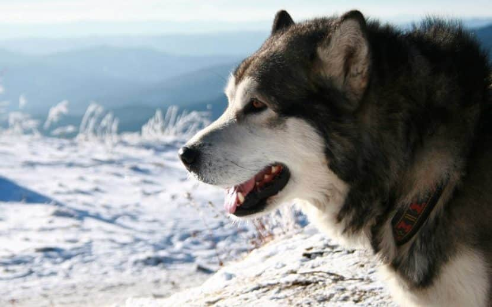

It is often said that tough environments breed toughness at its purest, and this is as true as it gets for Alaskan dog breeds. It simply does not get any tougher than that! The freezing wind, long days and long nights, next to no food in sight, temperatures that rarely climb above freezing, rough and inhospitable terrain, an environment where life is the last thing that one would expect to find, much less dogs.
Still, they’ve done it! It took millennia, but the arctic species that inhabit the very edge of the arctic circle have managed to adapt to the harsh environment in such a way that they haven’t just survived, but they have also thrived and honed every single bit of their very existence in order to make the most out of this harsh and unforgiving environment.
They might be tough, they might be strong, they might be able to take on the world, but at the same time they are still as loving and as loyal as you would expect them to be.
Below we’re going to discuss the most common known breeds that come from Alaska

When we think of harsh and unforgiving environments we often think of a harsh and unforgiving animal, chiseled and adapted to thrive in even the most remote and secluded areas of the world, the wolf.
Arctic wolves are known to be some of the3 strongest, toughest but at the same time smartest and most cunning wolves out there. And truth be told, they need every single bit of their intelligence and cunning in order to survive the harsh environment that they live in.
With many generations of breeding and careful training, the Alaskan Husky came to be. A direct descendant of these wolves, the husky is by far one of the most intelligent dogs out there, being surpassed in intelligence only by the prestigious German Shepherd, but unsurpassed in cunning by no other breed out there.
The Husky was initially bred for light sled transportation, a sled dog through and through. A small pack of huskies is strong enough to pull a fully loaded light sled along with their master. These dogs possess some of the strongest legs and chests out there, being at the same time the best breed among all the Alaskan dog breeds when it comes to size vs. power ratios.
They also come packing a lot of stamina and energy, making them not only suited for long sled journeys but also capable of traversing immense stretches of land without suffering the effects of fatigue.
The Husky also inherited a strong sense of the pack from its wolf ancestors, making it fiercely proficient when it comes to working in packs. Often times, packs turn into veritable brotherhoods where differences are settled in short yet efficient ways. The dogs are literally having each other’s back for as long as they live.
There are a couple of downsides to owning a Husky, particularly the fact that they are not at all suited for apartment life and that they need a lot of daily exercise and a lot of room to run around. If a Husky is not properly exercised he or she will turn destructive, often burning his or her energy on the furniture, carpets and personal belongings of the master.
Another thing to note here is the fact that huskies are incredibly smart and cunning, being able to learn a lot of things involuntarily, and often times using this information for their direct benefit. This makes huskies some of the hardest dogs to work with when it comes to training, especially if the dog is kept in a small apartment and not exercised regularly. Some trainers often refuse to work with them because of their stubbornness.
It is a bit of a hassle to keep and train and make no mistake about it, it will require you to dedicate a lot of free time in order to keep your dog happy, exercised and trained, but if done right, you will gain a fiercely loyal and dedicated lifetime companion.
This breed is pretty much the bigger, stronger and tougher version of a Husky. Although they are completely different breeds, due to the fact that they share an ancestor and several common genes, people often tend to mistake malamutes for overgrown Huskies.
The first thing that will strike you when you see an adult Malamute for the first time is the sheer size of the beast; often an entire head taller than an average human when standing on its hind legs, as well as heavier.
The first thing that you must understand about Malamutes is the fact that it is a working breed through and through, and the sheer size of these magnificent creatures is the result of careful breeding over the ages in order to obtain the canine equivalent of a heavy hauling truck. These dogs were designed to pull, and they can pull a lot.
With the proper training and conditioning, a malamute can pull anywhere between 500 and 1500 Kg (a ton and a half basically). To pull that much weight, the malamutes have developed very strong back and incredibly powerful hind legs, almost to the point of managing to deliver as much power as a small car.
Out of all the Alaskan dog breeds, the Alaskan Malamute is pretty much the king of the ice and snow roads. Not quite the dog for sled racing or light hauling like its cousin, the Husky, but rather a long distance slow heavy hauler, capable of traversing long distances in a harsh environment while at the same time pulling a ton of freight behind it.
These dogs require a lot of upkeep, and a lot of care and attention. First of all, they eat a lot and they build up a lot of energy, however instead of becoming destructive like the husky, the malamute becomes aggressive. It is still closely related to the arctic wolves, and as a result of that, they still possess some fiercely predatory instincts, often times instinctively chasing small critters around and hunting them for the sheer enjoyment of it.
The malamute loves working and being around humans, however it has a small problem with younger kids, often times lacking the patience required to deal with them properly. This is why you should be quite mindful of the dog if you happen to have a rambunctious child running around the house.
They are rather quiet and gentle giants, being able to maneuver around furniture and small objects quite well. And even though they make great family dogs because of their fondness for human interaction, they make for some very bad watch dogs.
They are easier to work with than Huskies, and a lot easier to train, although they can be quite stubborn themselves on some occasions. This is because of the fact that they are not exactly as clever and as cunning as a Husky, however they are as loyal and as dependable as you can hope them to be.
If you plan on getting a Malamute as a house pet, first and foremost make sure that you can afford it. Both the puppies and the food that they consume will cost you a pretty penny, and in order to keep a happy and fulfilled dog around the house you will have to dedicate a lot of time to exercising and taking care of the dog’s needs, particularly keeping cool in the summer.
That’s right, a malamute is still an arctic dog, and as such, the coat that it sports is thick and fluffy, making it a shedding machine, especially in warmer climates. It has often been reported that malamute owners have filled their swimming pools with cold water during the summer in order to allow the dog to cool off during hot days. Their coat needs to be groomed and trimmed quite often to keep the shedding to a minimum and give the dog the needed thermal comfort.
This dog loves snow and you will find that the malamute will be quick to play and frolic in the snow as soon as it gets the chance.
One last thing to not about the malamutes is the fact that they tend to become more or less big babies, often acting as children in order to get some affection or even a reaction out of you. This is fine to a certain extent though, and with the proper time and training, you can keep your malamute under control.
Although it might not look like it, this smiling and often playful looking dog hides a rather difficult and hard to grasp truth: it’s one of the most volcanic and driven breed you can get from the Arctic Circle. This is not particularly a bad thing, and it’s not a dangerous dog, but rather a stronger and more independent dog than what the vast majority of people are used to.
In all fairness, this is the purest working dog breed that can be found in North America, initially being raised by the Inuit people throughout the Canadian frozen wastes in order to help them with surviving, hunting, guarding and even transportation in the form of sleds.
When it comes to toughness, these dogs take the cake, being more or less conditioned and genetically programmed throughout the ages to hunt and forage for their own food, in the middle of the frozen wastes of Northern Canada.
That being said, these dogs grew up to be among the most independent dogs out there, often times being able to take care of themselves. At the same time they developed a very strong prey drive, making them chase after smaller creatures, and even smaller dogs. They are not dangerous though, and if in a civilized environment, they will chase only for the thrill and fun of it, often resorting to playful behavior if they manage to catch their target.
Another interesting thing about this particular breed is the fact that they are among the very few northern breeds that make for very good watch dogs. This is because they are very territorial and they grow incredibly fond and attached to their owners. They may even end up protecting the household with their lives if need be.
There is something that you should know beforehand if you plan on getting a Canadian Eskimo Dog as a house pet: you will need to train them yourself. First of all, these dogs need training, in order to cope with the new environment without the risk of aggression of fright. However, there are only a few trainers that can actually train this dog. Actually, the only person that can succeed in training this gorgeous canine is the person that it grows up around, the master that takes care of him or her from its puppy years. It is pretty much the only person that this dog will fully listen to and fully obey. Some trainers manage to train this dog to do a couple of tricks at most, but complete success will only be attained by the dog’s master and owner.
A rather difficult aspect of this dog’s training is the socialization aspect. It’s rather difficult to properly socialize this dog, because even though it is capable of functioning in a pack, and often time had to throughout the ages, when presented with dogs that are smaller than him or her the prey drive kicks in and they end up chasing them around. At the same time, when presented with bigger and tougher dogs, they tend to become incredibly defensive to the point of aggression if need be.
This dog tends to be a bit shy around new people, often times paying close attention to its owner in order to figure out whether or not the new people around are desirables or undesirables.
One last thing to note about this dog is the fact that it is also among the smartest dogs out there. It’s just as smart as a Husky, but not as cunning, often times choosing to use its intelligence in order to benefit the master and the household rather than for personal gain.
While it is indeed smart, it is still relatively shy around new people, and rather careful as a result of that, so give it a bit of time and let the dog properly adapt and build up the courage to approach new people.
Stressing the dog out and forcing him or her to make the first approach can result in some rather undesired side effects that might affect the dog long term, so exercise patience and let the dog move at his or her own pace when it comes to this aspect.
As a final conclusion in regards to Alaskan dog breeds, we can clearly say that these dogs were not bred to be pets or to doddle around the house. They were bred and raised in a rough and unforgiving environment and whether they liked it or not, they had to pull their own weight in order to survive. This, in turn, allowed them to evolve over generations, growing stronger, smarter, more cunning and more flexible. At the same time, it made them become more loyal and more attached to their masters.
Some dogs excel at getting the most out of their strength, some dogs excel at speed and cunning, while others are more or less the embodiment of loyalty and fondness, but what they all have in common is their ancestry. The fierce, yet majestic arctic wolves, and the traits that these wolves possessed will live on through these breeds.
While the world has evolved beyond the point of dependency on these dogs for hauling supplies, freight or even survival in the frozen wastes, we cannot but admire their beauty and adopt them as pets. Still, some still preserve the traditions and the ways of life that gave these dogs their glory days.
Even today we can see these dogs in action one way or another, thus being reminded of exactly what attracted us towards these breeds and more importantly what attracted these breeds to us.
The Alaskan dog breeds are only but a few of the beautiful and magnificent dog breeds out there however they are by far the most beautiful, the most resilient, the strongest and the dogs that can truly take on the world and make the most out of any environment.
These dogs do come with their own set of challenges though, and if you indeed plan on taking one of these dogs as a pet, make sure to be prepared and ready for anything, just like they were when we turned to them for help in the frozen tundra.